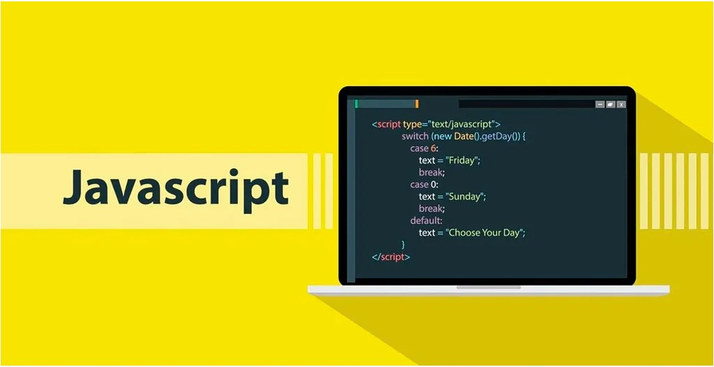

Avant de lire cette page, regardez cette vidéo
C’est à cette époque que naissent ou deviennent très populaires de grands services comme Google, qui révolutionne la recherche d’informations sur Internet grâce à un moteur de recherche rapide et efficace. Google est un moteur de recherche développée par Alphabet une entreprise américaine.
L'entreprise s'est principalement fait connaître à travers la situation monopolistique de son moteur de recherche, concurrencé historiquement par AltaVista puis par Yahoo! et Bing. Le boom d’internet a permis à d’autres plateforme de s’émanciper comme Amazon, Le site de vente a été fondé en 1994 par Jeff Bezos, qui transforme le commerce en ligne en permettant d’acheter des produits directement depuis chez soi.
Des plateformes comme eBay développent également les ventes entre particuliers, tandis que Yahoo! devient l’un des portails web les plus visités du monde. Les sites Internet deviennent progressivement plus modernes et interactifs grâce à l’apparition de nouvelles technologies comme le CSS, qui améliore l’apparence des pages, et le JavaScript, qui permet d’ajouter des animations et des interactions.
